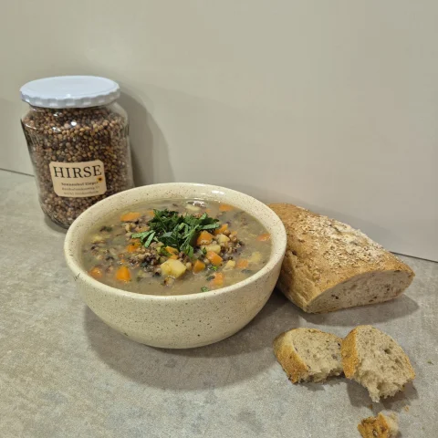
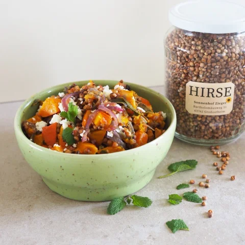
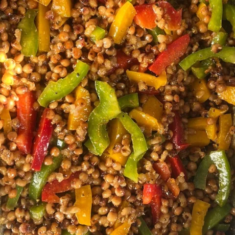
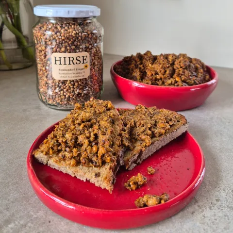

Unsere Sorghum-Hirse schmeckt herzhaft im Eintopf, frisch im Salat oder würzig als Brotaufstrich. Hier finden Sie unsere liebsten Rezepte zum Herunterladen und Nachkochen – Schritt für Schritt erklärt. Guten Appetit!

Deftiger Eintopf mit Kartoffeln und Gemüse der Saison – genau das Richtige für kalte Tage.
Rezept als PDF
Hirse mit Kürbis-Ofengemüse, einem Zitronen-Minz-Dressing und Feta – passt wunderbar in den Herbst.
Rezept als PDF
Bunter Salat mit Paprika, Mais und Rucola. Ideal fürs Grill-Buffet oder als leichte Sommermahlzeit.
Rezept als PDF
Herzhafter Brotaufstrich mit Champignons, Zwiebeln und geräuchertem Paprikapulver.
Rezept als PDFUnsere Hirse bekommen Sie rund um die Uhr in der Hofladen-Verkaufshütte im Bartholomäusweg 51 in Großostheim.
Zum Verkauf ab Hof